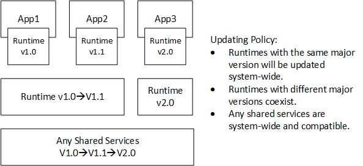

The SDK includes runtime installers under $(RSSDK_DIR)/runtime. The directory exists if you select redistributable components, selected by default, during the SDK developer package installation.
The runtime installers perform the following operations:
| • | If there is no existing runtime, install the SDK modules. |
 Certain SDK module runtimes may have license restrictions. See Speech Runtime and Language Packs for details.
Certain SDK module runtimes may have license restrictions. See Speech Runtime and Language Packs for details.
| • | If there is an existing runtime, update the runtime. |
The upgrading policy is illustrated in Figure 3. If the existing runtime is older (the major version is the same and the minor version is lower), the existing runtime is updated. Otherwise the two runtimes coexist on the same system. The runtime installers do not override SDK runtimes that are up-to-date, or of a different major version.

Figure 3: Runtime Upgrading Policies
Table 6 lists available runtime installers.
Runtime Installer (YYYY is the SDK version) |
Description |
intel_rs_sdk_runtime_YYYY.exe |
The SDK runtime master installer for offline installation. This installer may be available only through download due to its size. |
intel_rs_sdk_runtime_websetup_YYYY.exe |
The SDK runtime master installer for online installation. |
intel_rs_sdk_runtime_core_YYYY.exe |
The SDK core runtime installer. |
 The runtime installers may have different distribution rights. See redist.txt in the SDK package for details.
The runtime installers may have different distribution rights. See redist.txt in the SDK package for details.
 The installation process may take some time. Your application installer must wait for the installation process to complete.
The installation process may take some time. Your application installer must wait for the installation process to complete.
 The installer requires the elevated privilege to install the runtime libraries and data files into the system folders.
The installer requires the elevated privilege to install the runtime libraries and data files into the system folders.
You can pack the runtime installer(s) in your application installer using any of the following installation scenarios.
Installation Case 1: Capture Only Installation
The SDK core runtime installer includes libraries for raw camera data capturing and SDK essential features such as session management, SenseManager pipelining, and file recording and playback. If your application works with camera data capturing only and does not use any algorithms (such as face tracking or hand tracking), you can pack the core runtime installer as part of the application installation.
Installation Case 2: Module Offline Installation
The SDK runtime master installer includes the core runtime and additionally all algorithm (module) runtimes for offline installation. Usually an application only uses a subset of the provided algorithms. The master installer can export a set of customized installation scripts that include only the algorithms needed.
To generate the customized installation scripts, perform the following steps:
| • | Run the SDK runtime master installer with the command line --pre-bundle=<dir>, where <dir> is the absolute path of where the installer script should be exported. |
| • | Go through the installation flow and select the modules that your application needs. No installation is done. Instead, the master installer exports the installation scripts to the destination directory. |
| • | Pack the entire destination directory into your application installer, and follow the commands in readme_cmd.txt to install the SDK runtimes. |
Installation Case 3: Module Online Installation
To minimize the size of the application, you can use the SDK runtime master installer for online installation. The installer downloads the required modules from the Intel website during installation. Use the --finstall=<feature-list> --fnone=all command line to customize the algorithms to be installed. See Features and Components for the feature list.
Uninstallation
The SDK runtimes are shared among multiple applications. The application installer should never remove any SDK runtimes. Leave them on the system.
The user can manually uninstall the SDK runtime from Control Panel → Programs and Features. Do so only after all SDK applications are uninstalled from the system.
Speech Runtime and Language Packs
The speech runtime and language packs do not have an offline installation option. They are available only as online download if not already on the system.
To add the speech runtime and the language pack(s), append the speech runtime and language pack feature names to the installer option --finstall. See Features and Components for the feature names. For example, use --finstall=voice,genie_en_us to download and install the speech runtime and the US English language pack.
If you use the Module Offline Installation installation option, select the speech components and follow the instruction in readme_cmd.txt. For example, if you select the hand tracking module, the speech runtime and the US English language pack, the instruction in readme_cmd.txt is similar to --finstall=core,hand,voice,genie_en_us. The generated customized installer contains the local hand tracking runtime and the code to trigger downloading of the speech runtime and the language pack.
 During the runtime installation, due to license restriction, the installer needs to validate the Intel® RealSense™ 3D Camera platform. You need to prompt the user to plug in the camera if the camera is not integrated. The installer returns status code 3020 (see Command Option and Status Code) and skips the speech component installation if the installer fails to validate the platform.
During the runtime installation, due to license restriction, the installer needs to validate the Intel® RealSense™ 3D Camera platform. You need to prompt the user to plug in the camera if the camera is not integrated. The installer returns status code 3020 (see Command Option and Status Code) and skips the speech component installation if the installer fails to validate the platform.